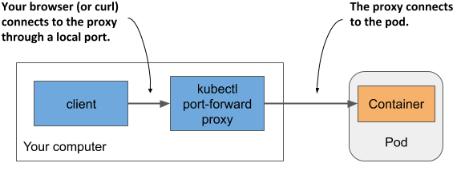
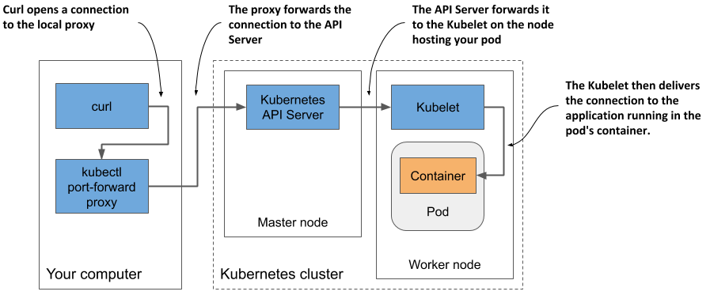

Interacting with the application and the pod
Your container is now running. In this section, you’ll learn how to communicate with the application, inspect its logs, and execute commands in the container to explore the application’s environment. Let’s confirm that the application running in the container responds to your requests.
Sending requests to the application in the pod
In chapter 2, you used the kubectl expose command to create a service that provisioned a load balancer so you could talk to the application running in your pod(s). You’ll now take a different approach. For development, testing and debugging purposes, you may want to communicate directly with a specific pod, rather than using a service that forwards connections to randomly selected pods.
You’ve learned that each pod is assigned its own IP address where it can be accessed by every other pod in the cluster. This IP address is typically internal to the cluster. You can’t access it from your local computer, except when Kubernetes is deployed in a specific way – for example, when using kind or Minikube without a VM to create the cluster.
In general, to access pods, you must use one of the methods described in the following sections. First, let’s determine the pod’s IP address.
Getting the pod’s IP address
You can get the pod’s IP address by retrieving the pod’s full YAML and searching for the podIP field in the status section. Alternatively, you can display the IP with kubectl describe, but the easiest way is to use kubectl get with the wide output option:
$ kubectl get pod kubia -o wide
NAME READY STATUS RESTARTS AGE IP NODE ...
kubia 1/1 Running 0 35m 10.244.2.4 worker2 ...
As indicated in the IP column, my pod’s IP is 10.244.2.4. Now I need to determine the port number the application is listening on.
Getting the port the application is bound to
If I wasn’t the author of the application, it would be difficult for me to find out which port the application listens on. I could inspect its source code or the Dockerfile of the container image, as the port is usually specified there, but I might not have access to either. If someone else had created the pod, how would I know which port it was listening on?
Fortunately, you can specify a list of ports in the pod definition itself. It isn’t necessary to specify any ports, but it is a good idea to always do so. See sidebar for details.
Why specify container ports in pod definitions
Specifying ports in the pod definition is purely informative. Their omission has no effect on whether clients can connect to the pod’s port. If the container accepts connections through a port bound to its IP address, anyone can connect to it, even if the port isn’t explicitly specified in the pod spec or if you specify an incorrect port number.
Despite this, it’s a good idea to always specify the ports so that anyone who has access to your cluster can see which ports each pod exposes. By explicitly defining ports, you can also assign a name to each port, which is very useful when you expose pods via services.
The pod manifest says that the container uses port 8080, so you now have everything you need to talk to the application.
Connecting to the pod from the worker nodes
The Kubernetes network model dictates that each pod is accessible from any other pod and that each node can reach any pod on any node in the cluster.
Because of this, one way to communicate with your pod is to log into one of your worker nodes and talk to the pod from there. You’ve already learned that the way you log on to a node depends on what you used to deploy your cluster. In Minikube, you can run minikube ssh to log in to your single node. On GKE use the gcloud compute ssh command. For other clusters refer to their documentation.
Once you have logged into the node, use the curl command with the pod’s IP and port to access your application. My pod’s IP is 10.244.2.4 and the port is 8080, so I run the following command:
$ curl 10.244.2.4:8080
Hey there, this is kubia. Your IP is ::ffff:10.244.2.1.
Normally you don’t use this method to talk to your pods, but you may need to use it if there are communication issues and you want to find the cause by first trying the shortest possible communication route. In this case, it’s best to log into the node where the pod is located and run curl from there. The communication between it and the pod takes place locally, so this method always has the highest chances of success.
Connecting from a one-off client pod
The second way to test the connectivity of your application is to run curl in another pod that you create specifically for this task. Use this method to test if other pods will be able to access your pod. Even if the network works perfectly, this may not be the case. In chapter 24, you’ll learn how to lock down the network by isolating pods from each other. In such a system, a pod can only talk to the pods it’s allowed to.
To run curl in a one-off pod, use the following command:
$ kubectl run --image=tutum/curl -it --restart=Never --rm client-pod curl 10.244.2.4:8080
Hey there, this is kubia. Your IP is ::ffff:10.244.2.5.
pod "client-pod" deleted
This command runs a pod with a single container created from the tutum/curl image. You can also use any other image that provides the curl binary executable. The -it option attaches your console to the container’s standard input and output, the --restart=Never option ensures that the pod is considered Completed when the curl command and its container terminate, and the --rm options removes the pod at the end. The name of the pod is client-pod and the command executed in its container is curl 10.244.2.4:8080.
NOTE
You can also modify the command to run the bash shell in the client pod and then run curl from the shell.
Creating a pod just to see if it can access another pod is useful when you’re specifically testing pod-to-pod connectivity. If you only want to know if your pod is responding to requests, you can also use the method explained in the next section.
Connecting to pods via kubectl port forwarding
During development, the easiest way to talk to applications running in your pods is to use the kubectl port-forward command, which allows you to communicate with a specific pod through a proxy bound to a network port on your local computer, as shown in the next figure.
Figure 5.8 Connecting to a pod through the kubectl port-forward proxy

To open a communication path with a pod, you don’t even need to look up the pod’s IP, as you only need to specify its name and the port. The following command starts a proxy that forwards your computer’s local port 8080 to the kubia pod’s port 8080:
$ kubectl port-forward kubia 8080
... Forwarding from 127.0.0.1:8080 -> 8080
... Forwarding from [::1]:8080 -> 8080
The proxy now waits for incoming connections. Run the following curl command in another terminal:
$ curl localhost:8080
Hey there, this is kubia. Your IP is ::ffff:127.0.0.1.
As you can see, curl has connected to the local proxy and received the response from the pod. While the port-forward command is the easiest method for communicating with a specific pod during development and troubleshooting, it’s also the most complex method in terms of what happens underneath. Communication passes through several components, so if anything is broken in the communication path, you won’t be able to talk to the pod, even if the pod itself is accessible via regular communication channels.
NOTE
The kubectl port-forward command can also forward connections to services instead of pods and has several other useful features. Run kubectl port-forward --help to learn more.
Figure 5.9 shows how the network packets flow from the curl process to your application and back.
Figure 5.9 The long communication path between curl and the container when using port forwarding

As shown in the figure, the curl process connects to the proxy, which connects to the API server, which then connects to the Kubelet on the node that hosts the pod, and the Kubelet then connects to the container through the pod’s loopback device (in other words, through the localhost address). I’m sure you’ll agree that the communication path is exceptionally long.
NOTE
The application in the container must be bound to a port on the loopback device for the Kubelet to reach it. If it listens only on the pod’s eth0 network interface, you won’t be able to reach it with the kubectl port-forward command.
Viewing application logs
Your Node.js application writes its log to the standard output stream. Instead of writing the log to a file, containerized applications usually log to the standard output (stdout) and standard error streams (stderr). This allows the container runtime to intercept the output, store it in a consistent location (usually /var/log/containers) and provide access to the log without having to know where each application stores its log files.
When you run an application in a container using Docker, you can display its log with docker logs <container-id>. When you run your application in Kubernetes, you could log into the node that hosts the pod and display its log using docker logs, but Kubernetes provides an easier way to do this with the kubectl logs command.
Retrieving a pod’s log with kubectl logs
To view the log of your pod (more specifically, the container’s log), run the command shown in the following listing on your local computer:
Listing 5.4 Displaying a pod’s log
$ kubectl logs kubia
Kubia server starting...
Local hostname is kubia
Listening on port 8080
Received request for / from ::ffff:10.244.2.1
Received request for / from ::ffff:10.244.2.5
Received request for / from ::ffff:127.0.0.1
Streaming logs using kubectl logs -f
If you want to stream the application log in real-time to see each request as it comes in, you can run the command with the --follow option (or the shorter version -f):
$ kubectl logs kubia -f
Now send some additional requests to the application and have a look at the log. Press ctrl-C to stop streaming the log when you’re done.
Displaying the timestamp of each logged line
You may have noticed that we forgot to include the timestamp in the log statement. Logs without timestamps have limited usability. Fortunately, the container runtime attaches the current timestamp to every line produced by the application. You can display these timestamps by using the --timestamps=true option, as shown in the next listing.
Listing 5.5 Displaying the timestamp of each log line
$ kubectl logs kubia –-timestamps=true
2020-02-01T09:44:40.954641934Z Kubia server starting...
2020-02-01T09:44:40.955123432Z Local hostname is kubia
2020-02-01T09:44:40.956435431Z Listening on port 8080
2020-02-01T09:50:04.978043089Z Received request for / from ...
2020-02-01T09:50:33.640897378Z Received request for / from ...
2020-02-01T09:50:44.781473256Z Received request for / from ...
TIP
You can display timestamps by only typing --timestamps without the value. For boolean options, merely specifying the option name sets the option to true. This applies to all kubectl options that take a Boolean value and default to false.
Displaying recent logs
The previous feature is great if you run third-party applications that don’t include the timestamp in their log output, but the fact that each line is timestamped brings us another benefit: filtering log lines by time. Kubectl provides two ways of filtering the logs by time.
The first option is when you want to only display logs from the past several seconds, minutes or hours. For example, to see the logs produced in the last two minutes, run:
$ kubectl logs kubia --since=2m
The other option is to display logs produced after a specific date and time using the --since-time option. The time format to be used is RFC3339. For example, the following command is used to print logs produced after February 1st, 2020 at 9:50 a.m.:
$ kubectl logs kubia –-since-time=2020-02-01T09:50:00Z
Displaying the last several lines of the log
Instead of using time to constrain the output, you can also specify how many lines from the end of the log you want to display. To display the last ten lines, try:
$ kubectl logs kubia –-tail=10
NOTE
Kubectl options that take a value can be specified with an equal sign or with a space. Instead of --tail=10, you can also type --tail 10.
Understanding the availability of the pod’s logs
Kubernetes keeps a separate log file for each container. They are usually stored in /var/log/containers on the node that runs the container. A separate file is created for each container. If the container is restarted, its logs are written to a new file. Because of this, if the container is restarted while you’re following its log with kubectl logs -f, the command will terminate, and you’ll need to run it again to stream the new container’s logs.
The kubectl logs command displays only the logs of the current container. To view the logs from the previous container, use the --previous (or -p) option.
NOTE
Depending on your cluster configuration, the log files may also be rotated when they reach a certain size. In this case, kubectl logs will only display the new log file. When streaming the logs, you must restart the command to switch to the new file.
When you delete a pod, all its log files are also deleted. To make pods’ logs available permanently, you need to set up a central, cluster-wide logging system. Chapter 23 explains how.
What about applications that write their logs to files?
If your application writes its logs to a file instead of stdout, you may be wondering how to access that file. Ideally, you’d configure the centralized logging system to collect the logs so you can view them in a central location, but sometimes you just want to keep things simple and don’t mind accessing the logs manually. In the next two sections, you’ll learn how to copy log and other files from the container to your computer and in the opposite direction, and how to run commands in running containers. You can use either method to display the log files or any other file inside the container.
Copying files to and from containers
Sometimes you may want to add a file to a running container or retrieve a file from it. Modifying files in running containers isn’t something you normally do - at least not in production - but it can be useful during development.
Kubectl offers the cp command to copy files or directories from your local computer to a container of any pod or from the container to your computer. For example, to copy the /etc/hosts file from the container of the kubia pod to the /tmp directory on your local file system, run the following command:
$ kubectl cp kubia:/etc/hosts /tmp/kubia-hosts
To copy a file from your local file system to the container, run the following command:
$ kubectl cp /path/to/local/file kubia:path/in/container
NOTE
///////TODO
5.3.4 Executing commands in running containers